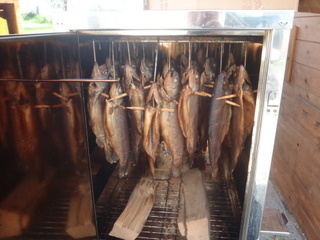
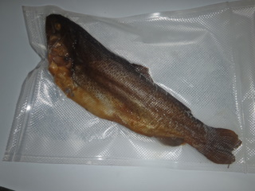

Nabízíme prodej živých ryb a krmiv pro chov ryb, produkce plůdku a násad lososovitých a reofilních druhů ryb, přepravu živých ryb a obchodní činností v rybářství.
Prodej konzumních živých ryb
- Pstruh duhový
- Kapr obecný (I. Třída)
- Kapr obecný (výběr)
- Amur bílý
- Lín obecný
- Okoun říční
- Tolstolobik bílý
- Sumec velký
- Štika obecná
- Candát obecný
naše nejznámější lososovitá ryba, ideální pro domácí přípravu. Jeho bílé maso lze upravit všemi způsoby a nikdy nezklame. U jakékoli tepelné úpravy si pochutnáte : grilování, pečení, dušení, smažení, vaření, uzení.
tradiční česká ryba s kvalitním chutným masem. Hodí se ke grilování, smažení, pečení, dušení.
tradiční česká ryba s kvalitním chutným masem. Hodí se ke grilování, smažení, pečení, dušení.
jeho chutné bílé maso je opravdovou pochoutkou. Zatím nevstoupil do povědomí spotřebitelské veřejnosti. Důvodem je krátká doba existence v českých podmínkách. Maso se hodí ke grilovaní, smažení, dušení a pečení, hodí se také na přípravu zeleninových salátů.
má chutné,kvalitní,libové maso. Dá se připravit všemi způsoby jako je grilování, smažení, pečení, uzení.
Velmí chutné maso okouna je téměř totožné s masem candáta - oba druhy řadíme do stejné čeledi okounovitých.
maso tolstolobika je velmi chutné - mastnější a hodí se spíš ke grilování a uzení, nehodí se ke smažení.
je největší dravec mezi sladkovodními rybami. Má dobré tučné maso. Hodí se k pečení, uzení a grilování.
patří mezi dražší a exkluzivnější ryby. K nejznámější tepelné úpravě patří štika na másle. Libové maso lehce stravitelné – dá se upravit všemi způsoby.
ceněná pochoutka vyšší cenové relace. Má lehce stravitelné maso vhodné ke grilování, rožnění, pečení, dušení, dušení s různými omáčkami (víno, houby, rajčata, smetana). Škoda ho smažit.
Prodej krmiv pro chov ryb
Nabízíme široký výběr krmiv pro chov ryb, více informací na prodejně nebo na telefonu 608500402.
Úprava ryb
Nabízíme zabíjení, kuchání, stahování kůže, odšupinování, filetování a nově i uzení ryb.
Úzení ryb
Udíme výhradně klasickým způsobem na bukovém a švestkovém dřevě. Ryby nakládáme pouze do soli, bez jakýchkoliv konzervantů nebo barviv.
Uzený pstruh vakuově balený - 85Kč/ks (trvanlivost 21dní). Ostatní druhy ryb pouze na objednávku.
 Produkce plůdku a násad lososovitých a reofilních druhů ryb:
- Pstruh obecný potoční
- Pstruh duhový
- Siven americký
- Lipan podhorní
- Parma obecná
- Ostroretka stěhovavá